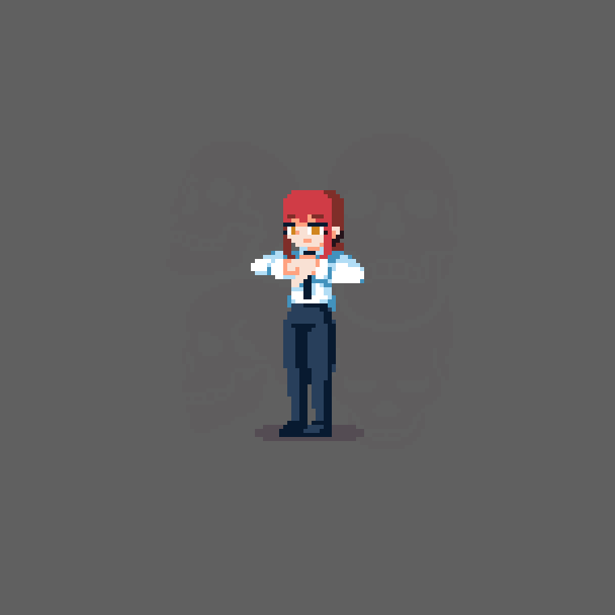
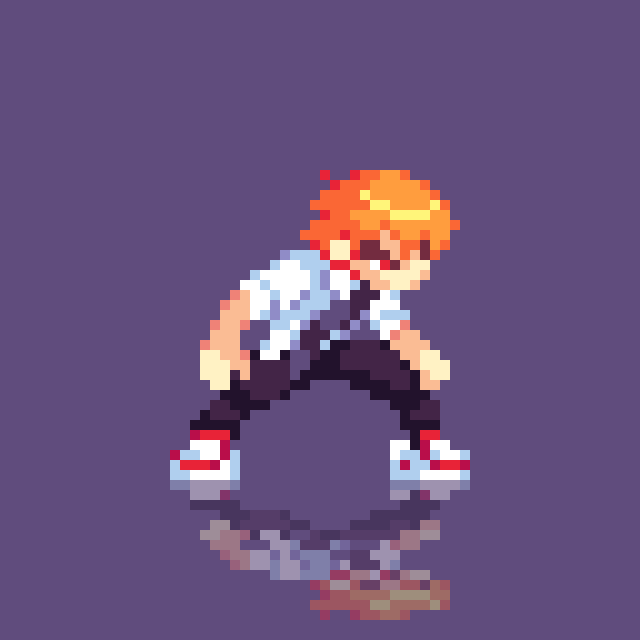
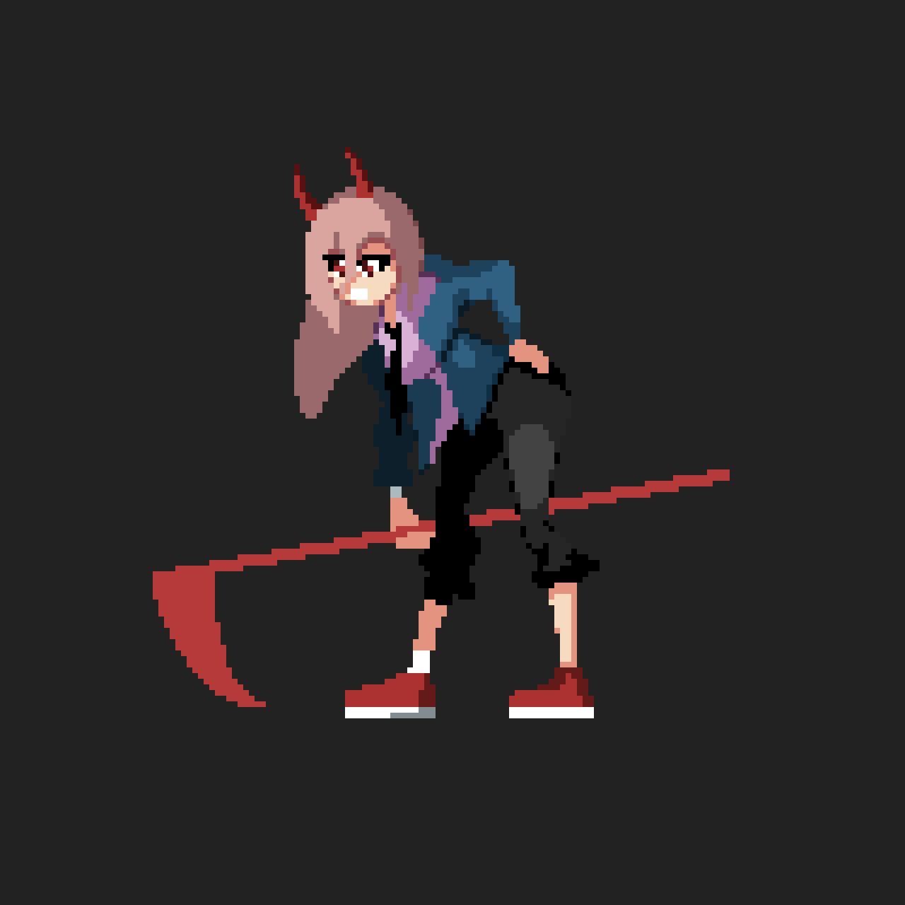
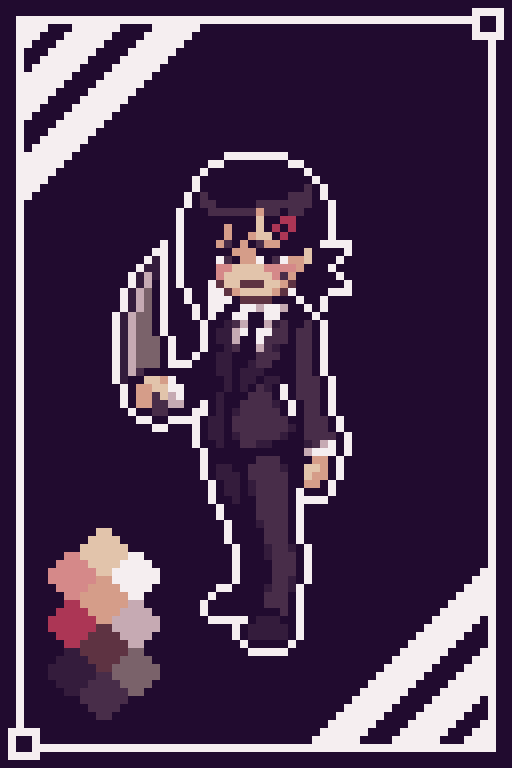

-
Makima #001
- Controle
- Manipuladora
Makima é o demônio que encarna o medo de controle, no universo de Chainsaw man. Como uma chefe da segurança pública, ela por muito tempo manteu seus verdadeiros planos em segredo, até enfim os relevar e se mostrar a principal antagonista da 1° parte da história.
-
Denji #002
- Chainsawman
- Peitos
Denji (デンジ, Denji) é o protagonista principal da série de mangá e anime Chainsaw Man, e o principal protagonista da Saga de Segurança Pública. Quando menino, ele herda as dívidas de seu pai da Yakuza. Depois de conhecer Pochita, ele se torna um Caçador de Demônio para a Yakuza na tentativa de saldar sua dívida.
-
Power #003
- Sangue
- Presidente.USA
Denji (デンジ, Denji) é o protagonista principal da série de mangá e anime Chainsaw Man, e o principal protagonista da Saga de Segurança Pública. Quando menino, ele herda as dívidas de seu pai da Yakuza. Depois de conhecer Pochita, ele se torna um Caçador de Demônio para a Yakuza na tentativa de saldar sua dívida.
-
Pochita #005
- Serra
- Fofura
A princípio, Pochita é introduzido como o mascote de Denji, mas, depois de um incidente, ele se sacrifica para se tornar o próprio coração de seu amigo e o transforma no Chainsaw Man. Pochita é muito mais do que apenas um bichinho de estimação, ele é um dos demônios mais especiais e poderosos no mundo de Chainsaw Man
-
Kishibe #006

- Mestre
- Velho
Kishibe é um dos principais personagens de Chainsaw Man. Ele se encontrou com Quanxi quando ele era jovem. Durante seu primeiro encontro, Kishibe pediu a Quanxi para se tornar sua mulher e ele foi rejeitado por ela imediatamente enquanto levava um soco dela.
-
Katana #007

- Laminas
- Assasino
O homem eventualmente conhecido como "Katana Man" era neto de um chefe da Yakusa que foi morto por Denji. Katana Man guarda rancor muito pessoal de Denji e faz o possível para derrubá-lo, até mesmo fundindo-se com um Demônio Katana para se tornar mais poderoso. Ele também é um dos assassinos que seguiram o Demônio Pistola para recuperar o coração de Denji.
-
Kobeni #008
- Timida
- Estudante
No início da história, Kobeni é apresentado como um dos novos recrutas do esquadrão experimental dos Caçadores de Demônios da Segurança Pública sob Makima. Logo de cara, as primeiras impressões prováveis dos leitores sobre Kobeni eram de que ela seria um desastre ansioso, em pânico e covarde . Kobeni escolheu trabalhar como Devil Hunter para ajudar sua família, embora eles realmente não lhe dessem escolha. Ela está fazendo isso para sustentar seus irmãos, especialmente seu irmão, mas ela sonha em eventualmente poder frequentar a faculdade também. Kobeni também é uma personagem bastante icônica entre os fãs de Chainsaw Man muitos de seus painéis de mangá são os favoritos de muitos. De certa forma, as reações e expressões faciais de Kobeni talvez estejam mais próximas de como uma pessoa normal reagiria dadas as várias situações da história. Sua natureza frenética e ansiosa é provavelmente como a maioria dos membros da platéia reagiria se ficasse cara a cara com Demônios. Durante seu encontro com o Demônio da Eternidade, Kobeni finalmente começou a entrar em pânico desde que eles estavam presos, e ela até tentou beber água de um banheiro. Ela também entrou em pânico com o confronto com Reze, que estava perseguindo Denji, e começou a implorar por misericórdia na frente dela.
-
Aki #009

- Frio
- Solitario
Aki Hayakawa era um Caçador de Demônios da Segurança Pública, trabalhando sob o esquadrão especial de Makima em Chainsaw Man. Ele tinha contratos com o Curse Devil e Future Devil, e um antigo contrato com o Fox Devil. Ele foi morto e possuído pelo Gun Devil, tornando-se um Gun Fiend. Aki geralmente parece ser uma pessoa muito estóica. Ele age de forma madura e às vezes contundente ao ponto de grosseria quando está com seus companheiros Caçadores de Demônios, mas na verdade ele é bastante de coração mole. Ele tem uma tendência a se apegar facilmente aos outros e odeia ver as pessoas se machucarem, especialmente seus amigos íntimos. Ao contrário de muitos de seus associados, ele é descrito por Himeno como sendo uma “pessoa normal”, no sentido de que ele ainda sofre pelos perdidos e não se cansou o suficiente para fechar seus sentimentos. Apesar disso, ele é muito determinado e sua principal motivação para matar o Gun Devil é a vingança por sua família. Ele está, no entanto, totalmente disposto a colocar sua própria vida em risco para salvar outras pessoas, apesar de seu próprio medo da morte e até mesmo de arriscar seu objetivo final.